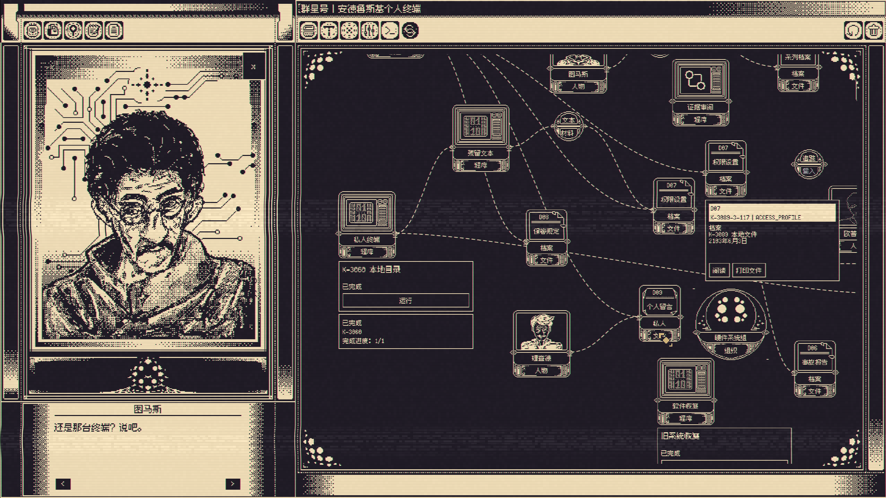
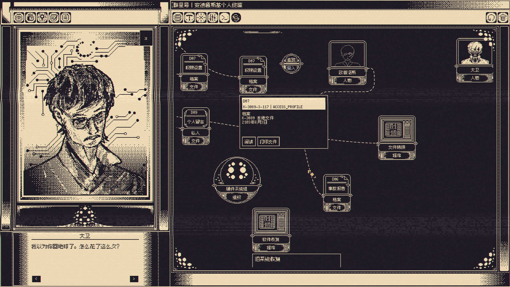

人际路线
硬件组的组员建议玩家去找组长。佩内洛普的办公室门开着，她却出去了。
花盆上有安妮留下的生日留言。玩家可以循着这份礼物找到安妮，问出佩内洛普的去向。
一款以“侦探墙”节点系统展开调查的科幻解谜游戏——探讨玩家如何在碎片信息中自主建构真相。
玩家扮演空间站维修员，接手一台在 17 年前太阳风暴事故中损毁的定制终端。
随着外壳、硬件与系统的逐步修复，一段被尘封的往事也逐渐浮出水面。

我把侦探墙做成节点工作台。玩家用五种工具提取、连接和核验线索，自己判断资料指向什么。
早期原型用搜索框推进调查。节点版保留多条检索路径，玩家能回看出处，并筛选要细读的文件。
型号查系列，编号查单机，人名引向走访。维修解锁新记录，玩家可继续查证或回看旧线索。

硬件组的组员建议玩家去找组长。佩内洛普的办公室门开着，她却出去了。
花盆上有安妮留下的生日留言。玩家可以循着这份礼物找到安妮，问出佩内洛普的去向。
玩家也可以在终端搜索硬件组。工作公告记录了近期作业地点，玩家可以直接赶去现场。
两条线索指向同一地点，玩家根据自己先找到的资料决定下一步。
我用 storylet 的思路组织对话、物件与文件，让玩家从不同入口拼出同一件事。
找到佩内洛普是推进维修的条件。办公室、安妮和公告则各自提供一段可以独立发现的信息。
我先把检索、移动和对话串进可玩的文字原型，检查每条线索是否足以让玩家判断该去哪里。
生日礼物让同事之间的关系变得具体，硬件组的公告则交代了他们的工作日常。
处理烧蚀表面后，玩家读出原本难以辨认的姓名和编号，有了新的检索依据。
玩家用探针逐点核对信号，缩小故障范围，把调查时的验证动作带入维修。
叠合并执行指令后，旧配置与留言重新可读。玩家可以用它们相互查证。

修完设备后，玩家可以结束任务，也可以继续追查事故。两条结局沿用同一套终端界面和运镜。
公告、档案状态与聊天对象随选择改变。玩家通过熟悉的角色和文件看出站内发生了什么。
我把这些变化放回玩家用来调查的终端，让原先用来搜集线索的界面在结局承担叙事。
继续调查能带来新的证据，也会改变玩家对早期线索的理解。最后怎样解释这起事故，由玩家判断。
| 终端中的变化 | 停止调查 | 继续调查 |
|---|---|---|
| 人员安排 | 图马斯再次休眠 | 其他工程师接管中央控制系统 |
| 公告与档案 | 设备归档，终端显示日常公告 | 档案追加调查状态，发布重启调查公告 |
| 聊天对象 | 安妮、佩内洛普，聊样本与植物 | 理查德、大卫，聊辩论赛与工作 |

我负责叙事、核心谜题与结局演出，用 AI 辅助制作可玩的网页原型，尽早验证操作和解谜顺序。
队友 THISHI 负责美术、程序与 Godot 整合，将确定的玩法接入 21 天挑战的提交版。